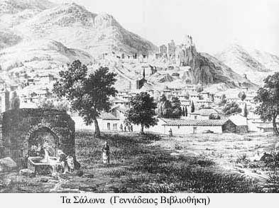

| Η δημιουργία οικισμών κάτω από το κάστρο  Επειδή τα κάστρα προσέφεραν καταφύγιο στους κατοίκους της υπαίθρου σε ώρες κινδύνου, δημιουργήθηκαν κάτω από αυτά οικισμοί. Έτσι κάστρα και οικισμοί συνδέθηκαν σε μια παράλληλη πορεία στο χρόνο. Η προστασία που προσέφερε το κάστρο και η στρατηγική θέση της περιοχής δημιουργούσαν ιδανικές συνθήκες για την οικονομική ανάπτυξη αυτών των οικισμών. Σε πολλές περιπτώσεις οι οικισμοί αυτοί αναπτύχθηκαν γρήγορα και εξελίχθηκαν σε πόλεις, όπως συνέβη και με την ¶μφισσα. Σε άλλες περιπτώσεις τα τείχη του κάστρου επεκτάθηκαν και συμπεριέλαβαν τους οικισμούς με αποτέλεσμα να δημιουργηθούν οι λεγόμενες καστροπολιτείες ( Μυστράς, Μονεμβασιά, Ρόδος). |
||